Analyse de l’espérance de vie dans chaque pays
CARIOU Romain : Rennes 2
BUARD Noah : Rennes 1
1. Introduction
Présenter votre sujet, l’objectif du projet:
Contexte et problématique :
L’espérance de vie est aujourd’hui l’un des indicateurs les plus parlants pour juger de l’état de santé d’une population ou du niveau de développement d’un pays. Cependant, bien que la moyenne mondiale ait progressé ces dernières décennies, cette dynamique cache également de profondes inégalités. En effet, dans les pays développés, l’espérance de vie dépasse aujourd’hui facilement les 80 ans alors que dans les pays en développement elle tend davantage vers 60 ans. Mais contrairement à ce qu’on pourrait penser, ces écarts ne s’expliquent pas uniquement par la richesse économique. Ils résultent d’une combinaison de facteurs sociaux, éducatifs et sanitaires. Dans cette étude, ce qui va particulièrement nous intéresser, c’est de comprendre comment tous ces facteurs interagissent entre eux. Notre objectif sera de répondre à la problématique suivante :
Dans quelle mesure les facteurs socio-économiques et sanitaires expliquent-ils les disparités internationales d’espérance de vie ?
Pour nous, l’intérêt de cette étude est de comprendre pourquoi certains pays affichent une espérance de vie élevée tandis que pour d’autres elle tend à stagner. L’objectif va être d’identifier quels facteurs vont être déterminants et quels moyens d’action vont être prioritaires pour les politiques publiques : amélioration de l’accès aux soins, renforcement des programmes de vaccination, lutte contre les maladies transmissibles, ou encore investissement dans l’éducation.
Afin de répondre à notre problématique, nous allons nous appuyer sur des hypothèses que notre modèle de régression linéaire multiple visera à tester.
Première hypothèse : Rôle très important des facteurs socio-économiques
L’indice de développement humain ainsi que le nombre moyen d’années d’éducation devraient logiquement afficher les coefficients β les plus élevés et fortement significatifs. Cette hypothèse visera à prouver que le développement économique et éducatif sont les conditions les plus importantes concernant l’allongement de l’espérance de vie.
Deuxième hypothèse : Impact des risques sanitaires / échecs des systèmes de soins.
Nous anticipons également le fait que les variables représentants les risques et échecs sanitaires, à savoir probabilité de décès entre 15 et 60 ans, le nombre de décès d’enfants de moins d’un an et la prévalence VIH/SIDA (population 15-49 ans) afficheront des coefficients β négatifs et fortement significatifs. Cette hypothèse visera quant à elle à chercher à quel point ces indicateurs sanitaires priment sur les facteurs de développement vu précédemment.
Troisième hypothèse : Efficacité des politiques de santé publique Cette hypothèse va chercher à montrer l’impact de l’organisation et de la prévention. La couverture vaccinale contre la polio est un indicateur direct de l’efficacité logistique et organisationnelle des systèmes de santé. Nous faisons l’hypothèse que son coefficient β sera positif et significatif, validant l’idée que la capacité à organiser des campagnes de prévention génère un gain d’espérance de vie.
Plan :
- Analyse descriptive et préliminaire des données. Nous allons commencer par donner le cadre de nos données, en énonçant sur quelle période de temps et sur quel secteur géographique nous allons effectuer notre étude. Nous expliquerons ensuite brièvement le nettoyage que nous aurons effectué sur notre jeu de données. Puis nous ferons une analyse descriptive tout d’abord univariée des données, en présentant un tableau des statistiques descriptives, les box plots et les différents histogrammes, puis une analyse descriptive bivariée des données, en décrivant notamment la corrélation de chaque variable explicative vis à vis de la variable à expliquer (ici l’espérance de vie), les différents de nuage de points vis à vis de l’espérance de vie et la corrélation entre les différentes variables explicatives au travers de la matrice de corrélation.
- Analyse et discussion des résultats D’abord nous nous occuperons de la modélisation principale. Nous procèderons à l’estimation du modèle de régression linéaire multiple (MCO) et présenterons notre interprétation des coefficients β. Cette étape visera à déterminer l’équation finale et à vérifier l’influence de chacune des 7 variables explicatives. Ensuite nous nous pencherons sur la robustesse de nos résultats. Nous effectuerons différents tests comme des tests de normalité des résidus, d’homoscédasticité et d’absence de multi-colinéarité sévère. Enfin nous ferons quelques analyses supplémentaires pour affiner notre analyse, en utilisant par exemple la transformation des variables, l’ajout d’effets non linéaires ou l’introduction d’effets croisés
- Conclusion générale et perspectives Dans cette dernière partie, Nous discuterons de la validation ou du rejet de nos hypothèses de départ. Nous répondrons également à notre problématique. Enfin, nous proposerons des pistes de recherche futures pour approfondir l’analyse des déterminants de l’espérance de vie mondiale.
2. Cadre méthodologique
La relation entre l’espérance de vie et les facteurs socio-économiques et sanitaires sera estimée en utilisant la méthode des Moindres Carrés Ordinaires (MCO). On justifie ce choix par le fait que les MCO sont la méthode d’estimation la plus courante et la plus simple pour la régression linéaire. Ils fournissent les estimateurs qui minimisent la somme des carrés des erreurs.
Nous partons de l’équation de régression linéaire multiple standard :
\[Y_i = \beta_0 + \beta_1 X_{1i} + \beta_2 X_{2i} + \cdots + \beta_k X_{ki} + \varepsilon_i\]
Où :
\(Y_i\) est la variable dépendante (espérance de vie) pour le pays \(i\).
\(\beta_0\) est l’ordonnée à l’origine (l’intercepte).
\(X_{ji}\) sont les variables explicatives (mortalité adulte, mortalité infantile, prévalence VIH, IDH et vaccination polio).
\(\beta_j\) sont les coefficients (les effets marginaux) à estimer.
\[\text{ESP\_VIE}_i = \beta_0 + \beta_1 \cdot \text{MORT\_ADU}_i + \beta_2 \cdot \text{MORT\_ENF}_i + \beta_3 \cdot \text{PREV\_VIH}_i + \beta_4 \cdot \text{IDH}_i + \beta_5 \cdot \text{VACC\_POLIO}_i + \beta_6 \cdot \text{STAT\_DEV}_i + \varepsilon_i\]
3. Analyse des données
3.1. Cadre des données
Notre étude s’appuie sur des données collectées à une échelle mondiale. L’ensemble des indicateurs socio-économiques et sanitaires est mesuré pour l’année 2015. Les individus de notre étude sont les pays (173 au total). Chaque ligne de notre base de données représente un pays pour lequel nous avons des variables socio-économiques et sanitaires.
| Code de la série | Définition | Unité | Source |
|---|---|---|---|
| ESP_VIE | Espérance de vie à la naissance | Années | ONU / OMS |
| PAYS | Nom du pays | Pas d’unité | Standard ISO |
| STAT_DEV | Statut de développement | Développé / En développement | ONU / Banque Mondiale |
| MORT_ADU | Probabilité de décès entre 15 et 60 ans | Nombre pour 1000 habitants | OMS |
| MORT_ENF | Nombre de décès d’enfants < 1 an | Nombre pour 1000 naissances vivantes | UNICEF |
| PREV_VIH | Prévalence VIH / SIDA (population 15-49 ans) | % de la population | ONUSIDA |
| IDH | Indice de développement humain | Indice (0 à 1) | PNUD |
| SCOL | Nombre moyen d’années d’éducation | Années | BLEAD / UNESCO |
| VACC_POLIO | Couverture vaccinal polio | % d’enfants vaccinés | OMS / UNESCO |
3.2 Prétraitement et nettoyage des données
Sur la totalité des individus, certains ont été supprimés car ils ne présentaient pas de résultats pour l’année 2015. On en a supprimé certains également car ils présentaient des données manquantes. On a ensuite sélectionné nos 7 variables explicatives et notre variable à expliquer. Le choix des variables s’est fait d’une part en fonction des données manquantes très présentes pour certaines, mais également leur pertinence pour notre étude
3.3 Analyse descriptive univariée des données
Vous devez décrire les données utilisées dans la modélisation, après nettoyage.
Tableau de statistiques descriptives
## ESP_VIE MORT_ADU MORT_ENF PREV_VIH ## Min. :51.00 Min. : 1.0 Min. : 0.00 Min. :0.1000 ## 1st Qu.:66.00 1st Qu.: 74.0 1st Qu.: 0.00 1st Qu.:0.1000 ## Median :73.90 Median :138.0 Median : 2.00 Median :0.1000 ## Mean :71.71 Mean :151.4 Mean : 22.51 Mean :0.6659 ## 3rd Qu.:76.70 3rd Qu.:211.0 3rd Qu.: 15.00 3rd Qu.:0.4000 ## Max. :88.00 Max. :484.0 Max. :910.00 Max. :9.3000 ## IDH SCOL VACC_POLIO ## Min. :0.3470 Min. : 4.90 Min. : 5.00 ## 1st Qu.:0.5650 1st Qu.:10.80 1st Qu.:83.00 ## Median :0.7230 Median :13.10 Median :93.00 ## Mean :0.6917 Mean :12.93 Mean :82.97 ## 3rd Qu.:0.7980 3rd Qu.:15.00 3rd Qu.:97.00 ## Max. :0.9480 Max. :20.40 Max. :99.00## ## Developed Developing ## 0.1676301 0.8323699Analyse tableau des statistiques descriptives :
On a une espérance de vie dans le monde d’environ 71 ans. Cependant, il y a une dispersion assez importante car le minimum est de 51 ans et le maximum de 88 ans. Le fait que la médiane soit supérieure à la moyenne indique une plus grande proportion de pays ayant une espérance de vie élevée. La proportion des pays développés est très faible comparée à celle de ceux en développement. Concernant la couverture vaccinale, la majorité en a une excellente car la médiane est de l’ordre de 93%. La moyenne étant plus faible, cela signifie que certains pays pour qui la couverture vaccinale est très faible. Pour ce qui est de la mortalité infantile, la médiane n’est que de 2 décès mais la moyenne de 22.51 décès, causé par un maximum très élevé. Cela montre une forte concentration des pays à faible mortalité. La mortalité adulte, quant à elle, présente une moyenne supérieure à la médiane, indiquant une prédominance des pays à faible mortalité, bien que quelques-uns présentent un taux important. Pour ce qui est de la prévalence VIH, on a une médiane très faible, contrastant avec une moyenne plus élevée, causée par les pays présentant des taux extrêmes. Enfin, pour l’IDH et la scolarisation, le constat pour ces deux variables est similaire. En effet, leur médiane et moyenne respectives sont proches, ce qui montre une distribution plus équilibrée entre les pays
Histogrammes
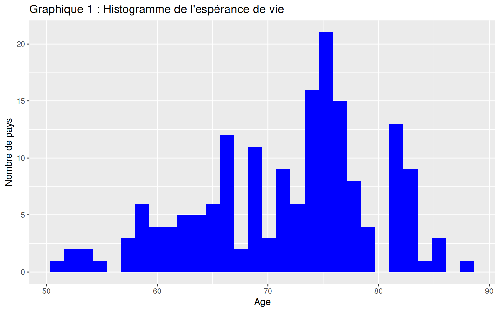
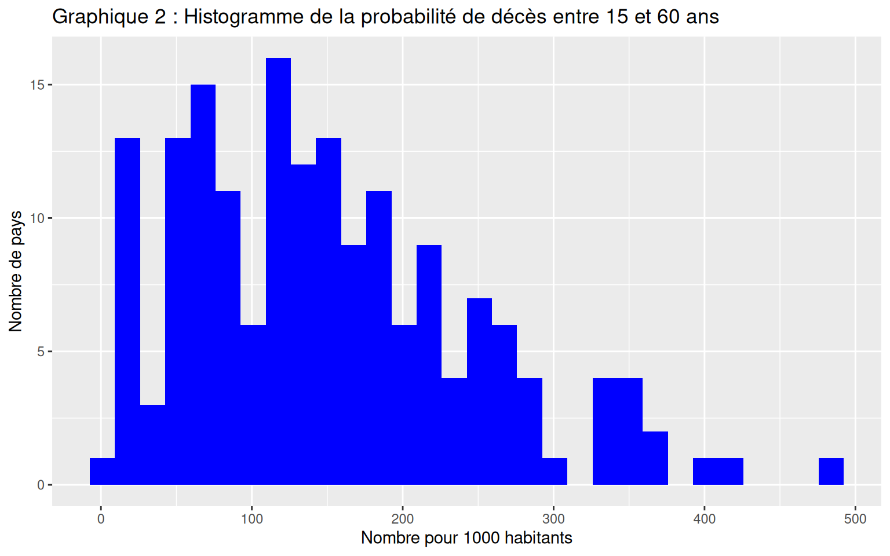
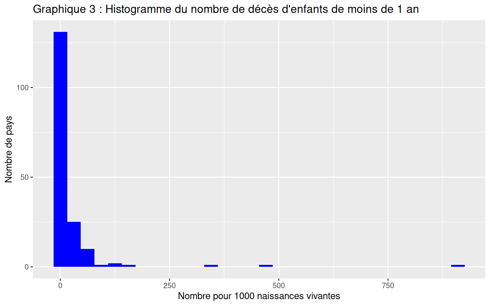
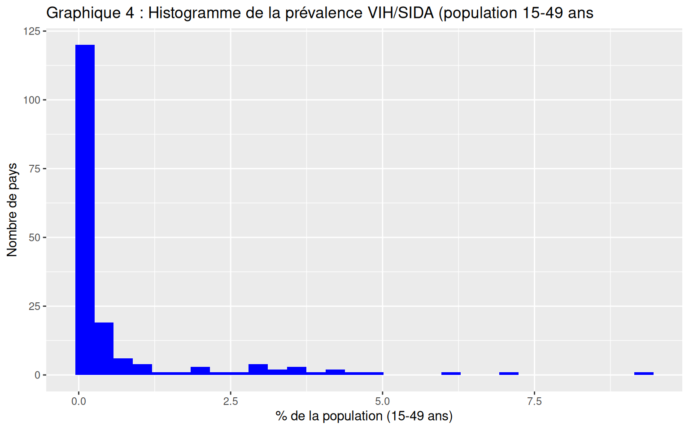
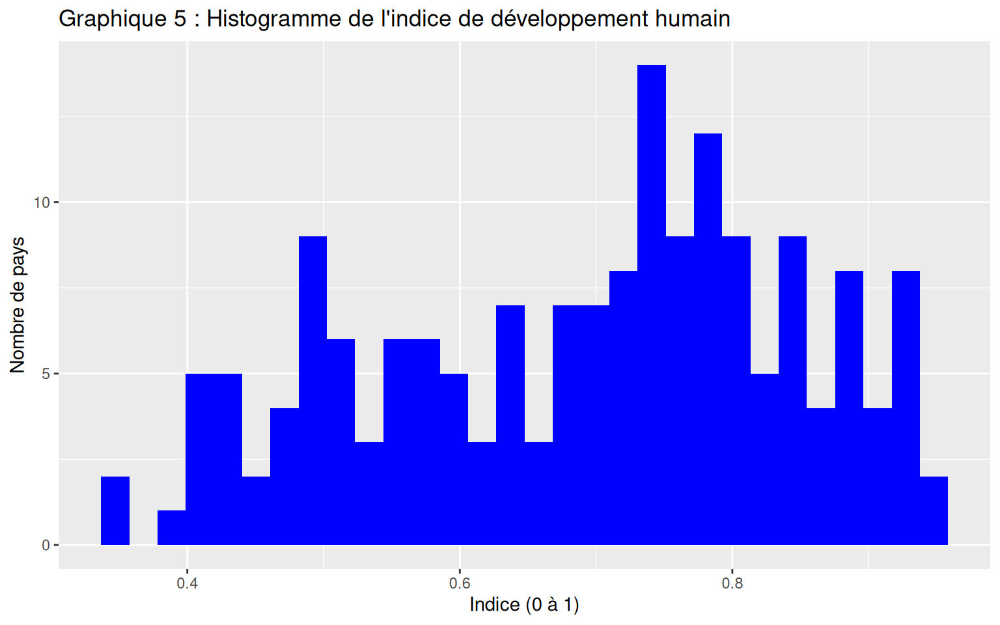
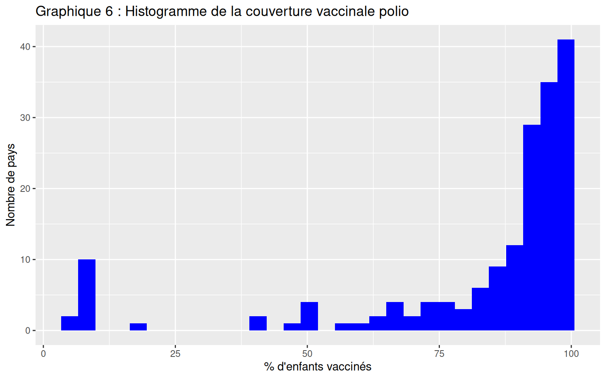
Analyse des histogrammes :
Graphique 1 (Espérance de vie) : On observe une distribution asymétrique. La variable ne suit donc pas une loi normale. Il y a également des valeurs atypiques du côté des valeurs faibles, représentant les pays avec des espérances nettement inférieures à la majorité.
Graphique 2 (Mortalité adulte) : On a également une distribution asymétrique. La variable ne suit donc pas non plus une loi normale. La majorité des pays présente une mortalité adulte faible. On a simplement quelques observations atypiques présentant un taux de mortalité très élevé.
Graphique 3 (Mortalité infantile) : Encore une fois, nous avons une distribution asymétrique et la variable ne suit pas une loi normale. Les quelques valeurs extrêmes sont très éloignées et représentent des situations de crise ou de très faible développement.
Graphique 4 (Prévalence VIH) : Comme précédemment, distribution asymétrique impliquant le fait que la variable ne suit pas une loi normale. Les quelques valeurs extrêmes correspondent aux quelques pays très touchés par les épidémies de VIH.
Graphique 5 (IDH) : On a cette fois une distribution moins asymétrique. On observe aucune valeur atypique ici. Les pays ayant un IDH faible sont simplement à l’extrémité inférieure de l’histogramme.
Graphique 6 (Vaccination polio) : Une nouvelle fois, on a une distribution asymétrique et la variable ne suit donc pas une loi normale en raison des différents pics observés. Les valeurs extrêmes à gauche sont les pays ayant une couverture vaccinale très mauvaise, et ne concerne que très peu de pays.
Boxplots
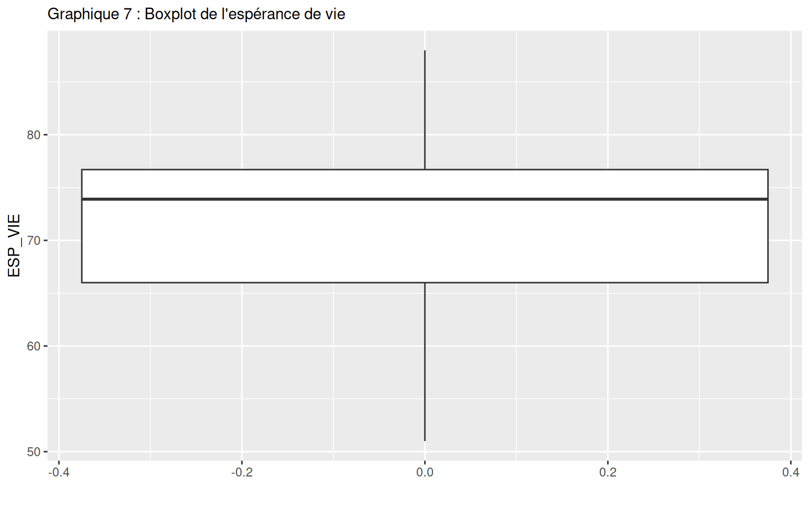
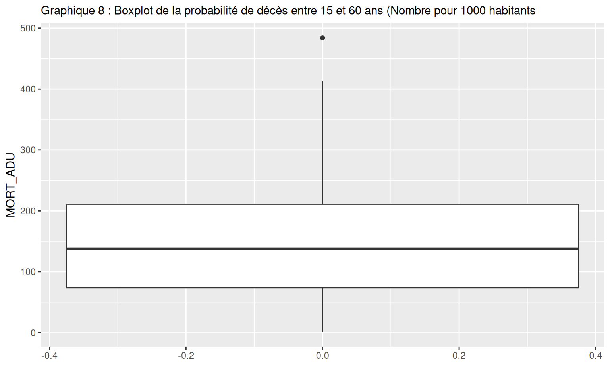
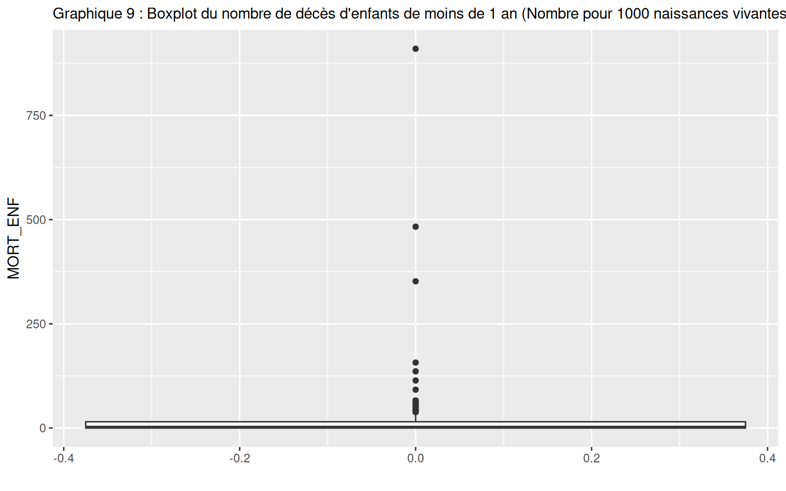
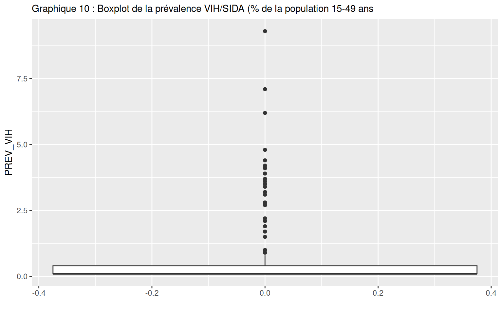
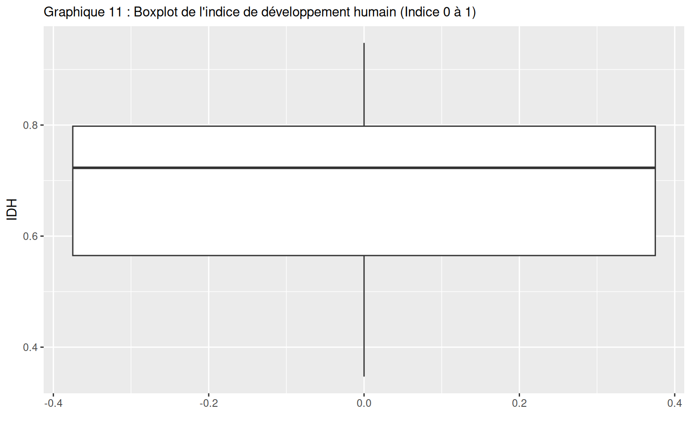
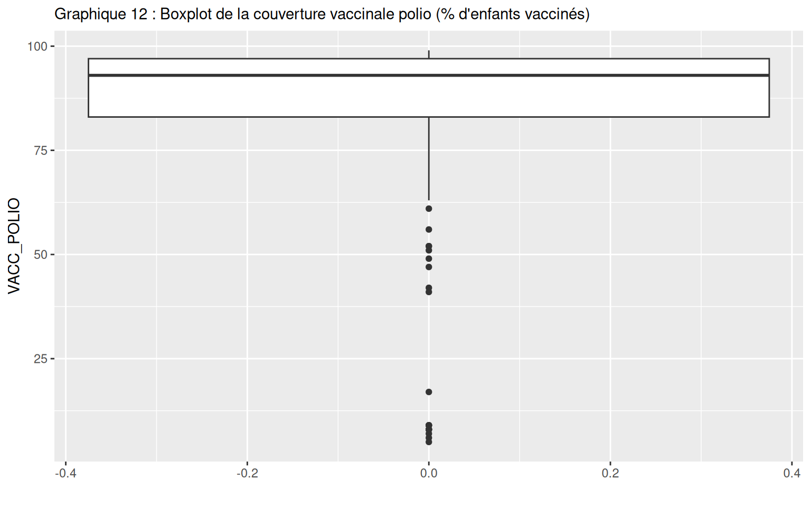
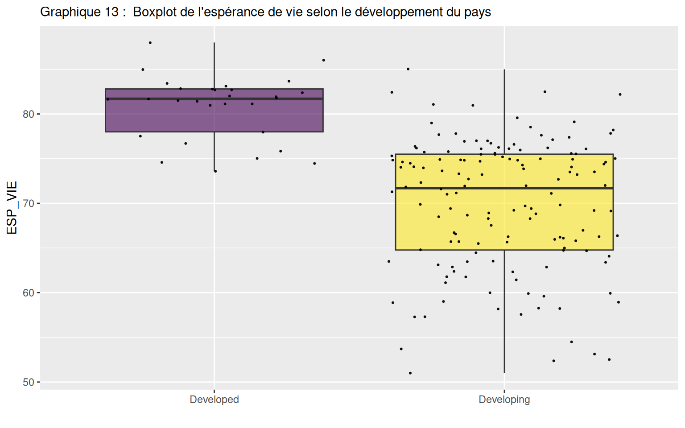
Analyse des boxlpots :
Graphique 7 (Espérance de vie) : il n’y a pas d’individu atypique et la boîte à moustache n’est pas particulièrement écrasée d’un côté ou de l’autre. La dispersion de l’espérance de vie semble être relativement symétrique.
Graphique 8 (Mortalité adulte) : on a un individu atypique en haut. La boîte à moustache est davantage écrasée vers le bas.
Graphique 9 (Mortalité infantile) : ici la boîte à moustache est totalement écrasée vers le bas et on peut identifier quelques individus atypiques.
Graphique 10 (Prévalence VIH) : la boîte à moustache est légèrement moins écrasée vers le bas mais il y a également une grande quantité d’individus atypiques.
Graphique 11 (IDH) : il n’y a pas d’individus atypiques et la boîte à moustache n’est pas particulièrement écrasée d’un côté ou de l’autre. Distribution symétrique.
Graphique 12 (Vaccination Polio) : la boîte à moustache est ici écrasée vers le haut. On dénombre également pas mal d’individus atypiques.
Graphique 13 (Statuts de développement) : on a une nette différence de dispersion entre les deux groupes. Pour les pays développés, l’espérance de vie est beaucoup plus élevée que celles des pays en développement (en témoigne la médiane) et la dispersion est faible. On constate peu d’individus atypiques et ils ont malgré tout une espérance plutôt élevée. Concernant les pays en développement, l’espérance de vie est plus faible et nettement plus dispersée. Cependant, on observe davantage d’individus atypiques parmi lesquels l’espérance de vie est comparable à celle des pays développés.
3.4 Analyse descriptive bivariée des données
Vous devez décrire vos données vis à vis de votre variable à expliquer
Corrélation vis à vis de Y
## MORT_ADU MORT_ENF PREV_VIH IDH SCOL VACC_POLIO ## [1,] -0.759792 -0.217173 -0.6138784 0.9073639 0.8181594 0.5167237Interprétation de la corrélation vis à vis de Y :
Tout d’abord, nous observons une relation très forte et positive entre l’espérance de vie et l’IDH. Assez logiquement, plus le niveau de développement d’un pays est élevé, plus l’espérance de vie tend à être importante. De même, il y a une relation très forte et positive entre l’espérance de vie et la scolarisation, signifiant que plus celle-ci est importante, plus l’espérance sera élevée. On constate aussi une relation forte et négative avec la mortalité adulte. Une baisse de la mortalité adulte est fortement associée à une hausse de l’espérance de vie. On a une relation modérée et négative entre l’espérance de vie et la prévalence VIH, c’est-à-dire que l’augmentation de celle-ci entraîne une baisse de l’espérance de vie. Il y a aussi une relation modérée mais cette fois positive entre l’espérance de vie et la vaccination polio, associant une meilleure couverture vaccinale à une espérance de vie plus élevée. Enfin, on a qu’une faible relation négative entre la mortalité infantile et l’espérance de vie. Cela signifie que la mortalité infantile n’est que faiblement associée à la variation de l’espérance de vie.
Nuage de point vis à vis de Y
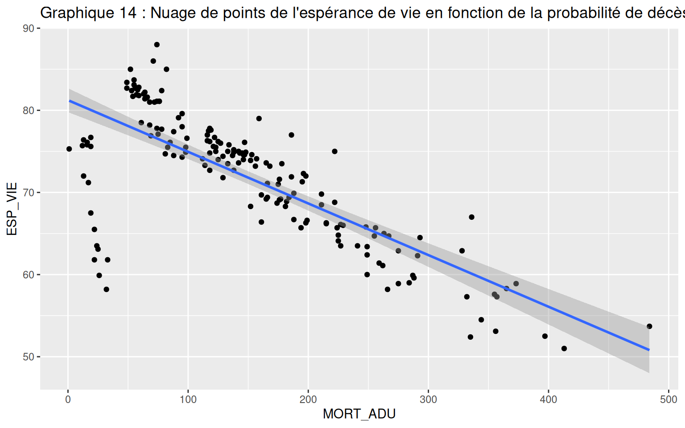
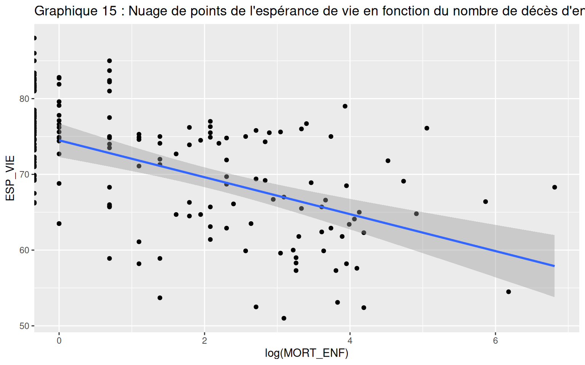
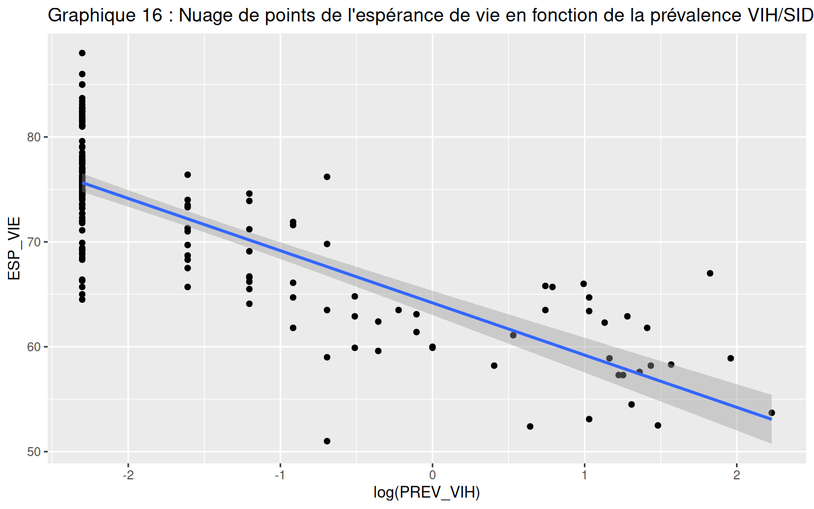
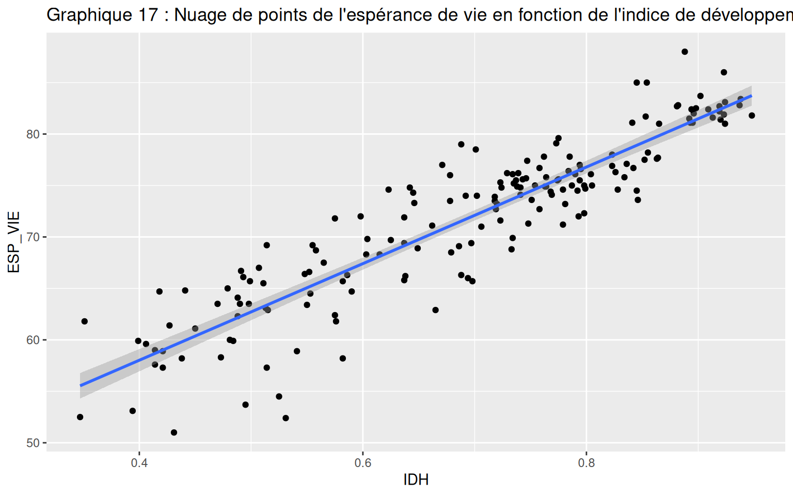
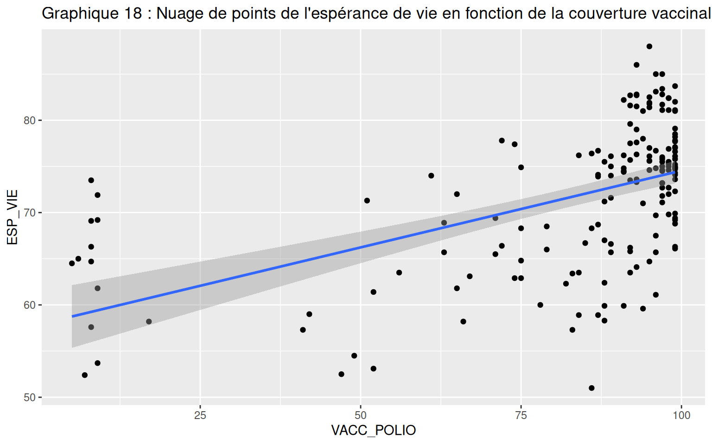
Analyse des nuages de points vis à vis de Y :
Graphique 14 (Mortalité adulte) : On observe une relation linéaire négative très nette. Les points sont en grande majorité répartis le long de la droite. L’espérance de vie diminue à mesure que la mortalité adulte augmente.
Graphique 15 (Mortalité infantile) : On a ici une relation linéaire négative mais avec une répartition des points très mauvaise, avec beaucoup de points agglomérés. Pour l’améliorer, on a passer en log la variable. Cela la rend la relation plus visible et exploitable.
Graphique 16 (Prévalence VIH) : Même chose que précédemment, la distribution des points étant mauvaise, le passage de la variable nous permet d’avoir des points mieux répartis le long de la droite de régression.L’impact de la prévalence VIH sur l’espérance de vie est ainsi davanatage visible.
Graphique 17 (IDH) : Ici, on a à nouveau une relation linéaire mais cette fois positive et très nette. Les points sont bien répartis le long de la droite, signifiant qu’un IDH élevé est synonyme d’une espérance de vie également plus grande.
Graphique 18 (Vaccination polio) : On voit une relation linéaire positive avec une répartition légèrement meilleure, et le passage au log de la variable ne l’améliore pas, car les valeurs déjà très concentrées vers les valeurs hautes.
Corrélation entre les variables explicatives
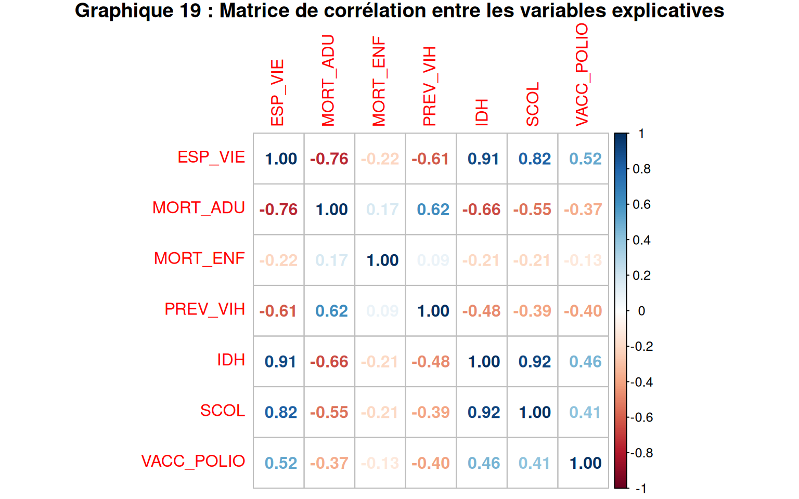
Interprétation de la corrélation entre les variables explicatives (Graphique 19) :
En premier lieu, on observe une relation forte et positive entre l’IDH et la scolarisation. Cette association entre deux variables significatives nous conduit à la problématique de multicolinéarité qui pourrait apparaître dans notre modèle de régression. Pour pallier ça, nous devrons supprimer une de ces deux variables. En l’occurrence, nous conserverons l’IDH, car la corrélation vis-à-vis de l’espérance de vie était plus élevée, en plus d’être un indicateur englobant entre autres la santé ou l’éducation. On observe également une relation forte et négative entre l’IDH et la mortalité adulte. Un indice de développement élevé est fortement associé à une faible mortalité pour les adultes. On avait aussi une relation similaire entre la scolarisation et la mortalité adulte, mais le fait qu’elle soit moins forte nous conforte dans le choix de conserver l’IDH. On observe également que la relation entre la mortalité des adultes et celle des enfants est faible, indiquant que les facteurs déterminant la mortalité des adultes sont distincts de ceux qui influencent la mortalité infantile. Du fait de cette faible relation, nous pouvons donc conserver les deux variables dans le modèle, car elles ne présentent pas de problème de multicolinéarité. Entre l’IDH et la prévalence VIH, nous voyons une relation modérée et négative, et de ce fait, il n’y a là aussi pas de problème de problème de multicolinéarité. Enfin, nous pouvons constater une relation très faible entre la mortalité infantile et l’IDH.
4. Analyse et discussion des résultats
4.1 Modélisation principale
Modèles testés :
niveau / niveau (1)
niveau /log (2)
log / log (3)
##
## =================================================================
## Dependent variable:
## ----------------------------------
## ESP_VIE log(ESP_VIE)
## (1) (2) (3)
## -----------------------------------------------------------------
## STAT_DEVDeveloping -0.831 -1.162* -0.008
## (0.663) (0.635) (0.009)
##
## MORT_ADU -0.017*** -0.016*** -0.0002***
## (0.003) (0.003) (0.00004)
##
## MORT_ENF -0.002 -0.002 -0.00004
## (0.002) (0.002) (0.00003)
##
## PREV_VIH -0.796***
## (0.198)
##
## log(PREV_VIH) -1.426*** -0.023***
## (0.239) (0.003)
##
## IDH 33.422*** 28.772*** 0.403***
## (2.118) (2.202) (0.032)
##
## VACC_POLIO 0.024** 0.025*** 0.0004***
## (0.010) (0.009) (0.0001)
##
## Constant 50.450*** 51.023*** 3.964***
## (2.026) (1.929) (0.028)
##
## -----------------------------------------------------------------
## Observations 173 173 173
## R2 0.889 0.900 0.899
## Adjusted R2 0.885 0.897 0.896
## Residual Std. Error (df = 166) 2.685 2.552 0.037
## F Statistic (df = 6; 166) 222.610*** 249.324*** 247.169***
## =================================================================
## Note: *p<0.1; **p<0.05; ***p<0.01Interprétation des modèles testés :
Nous avons décidé de tester 3 modèles distincts : le niveau-niveau, le niveau-log, et le log-log. Les deux premiers modèles présentent des similitudes, mais le passage au log de la variable de prévalence VIH nous permet tout d’abord un gain de précision. En effet, le R² ajusté passe de 0.885 à 0.897 et en parallèle l’erreur des résidus diminue (on a donc près de 90% de notre variance expliqué par le 2ème modèle), passant de 2.685 à 2.552, signifiant que les prédictions du modèle seront davantage proches de la réalité. Une différence majeure est également le fait que la variable du statut de développement est significative au seuil 10%, et non dans le premier modèle. Cela montre que le passage au log a permis de mieux isoler l’impact de la variable de développement. Dans aucun des deux modèles, la mortalité infantile n’est significative et est presque nulle. Cela signifie qu’avec l’IDH et la mortalité adulte, celle-ci n’apporte pas davantage d’informations pour prédire l’espérance de vie. La mortalité adulte, la vaccination polio et la mortalité infantile sont très proches voir identiques dans les deux modèles. La légère baisse de l’IDH dans le deuxième modèle peut être dû au fait que celui-ci compensait la prévalence VIH. Vis-à-vis du troisième modèle, on a un R² ajusté différent de 0.001. Cependant on perd la significativité de la variable du statut du développement. On va donc privilégier le deuxième modèle.
Passons à l’analyse des effets marginaux : Pour une augmentation de l’IDH de 0.1 point, on a une hausse de 2.88 ans. C’est la plus grande amélioration. L’IDH est la variable ayant la plus grande influence sur l’espérance de vie. Pour la variable de vaccination polio, pour chaque +1% de vaccinés, on ajoute 0.025 an, soit 9 jours d’espérance de vie. Cela signifie que même pour une petite progression de la vaccination, le gain est immédiat. Pour la mortalité adulte, chaque décès supplémentaire pour 1000 adultes retire 0.016 an, soit environ 6 jours d’espérance de vie. Pour la prévalence VIH, une hausse de 1% entraine une baisse de 0.014 an soit environ 5 jours d’espérance de vie. La mortalité infantile, elle est non significative et n’apporte donc rien de plus. Pour le statut de développement, on a un effet de saut, si le pays passe de “développé” à “en développement”, on a une baisse de 1.162 an. Vivre dans un pays en développement recule l’espérance de vie à cause de différents facteurs comme la pollution, ou l’instabilité politique par exemple.
4.2 Robustesse des résultats
- Hypothèses des MCO : normalités, hétéroscédasticité…
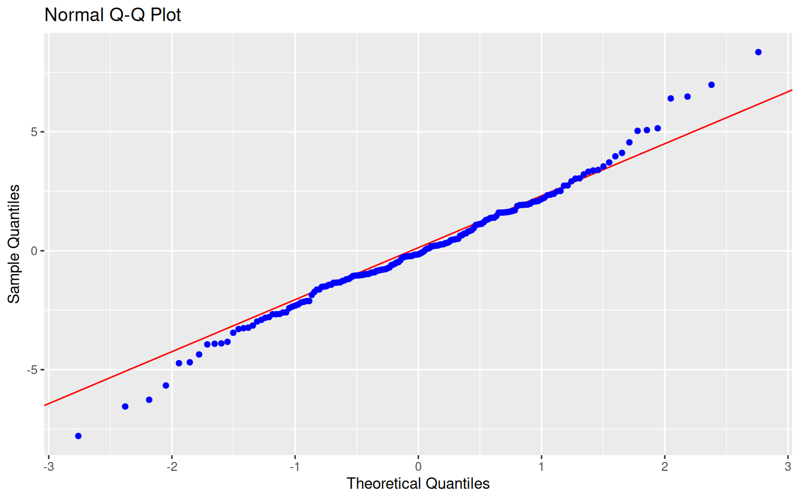
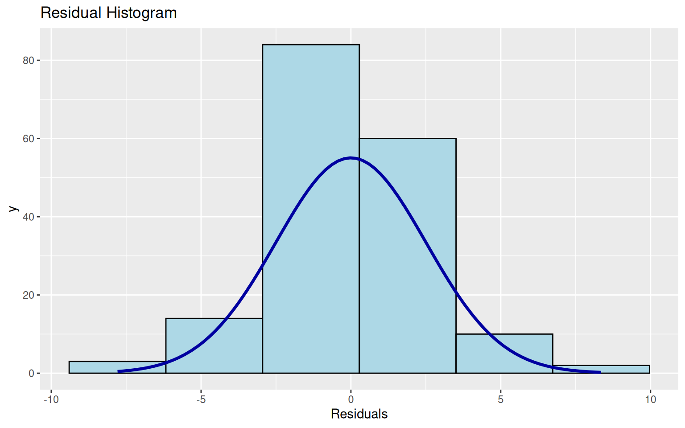
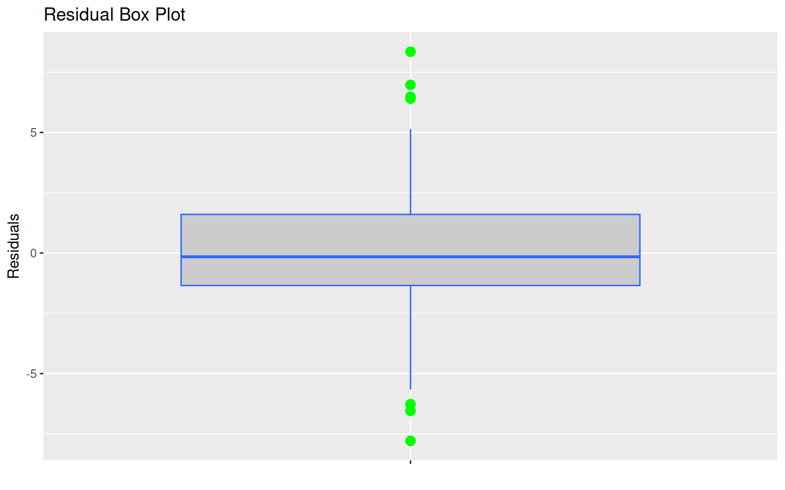
##
## One Sample t-test
##
## data: reg2$residuals
## t = -2.2037e-16, df = 172, p-value = 1
## alternative hypothesis: true mean is not equal to 0
## 95 percent confidence interval:
## -0.3762724 0.3762724
## sample estimates:
## mean of x
## -4.200939e-17##
## Shapiro-Wilk normality test
##
## data: reg2$residuals
## W = 0.98669, p-value = 0.1004Interprétation du test de moyenne nulle et de normalité sur les résidus (Shapiro-Wilk):
Pour le test de moyenne nulle, on a une p-value égale à 1. Etant supérieur au seuil 5%, on ne rejette pas l’hypothèse nulle. Cela signifie que nos prédictions sont justes en moyenne.
Pour le test de Shapiro-Wilk, on a une p-value égale à 0.1004. Elle est donc également supérieure au seuil 5%. Les résidus suivent une loi normale.
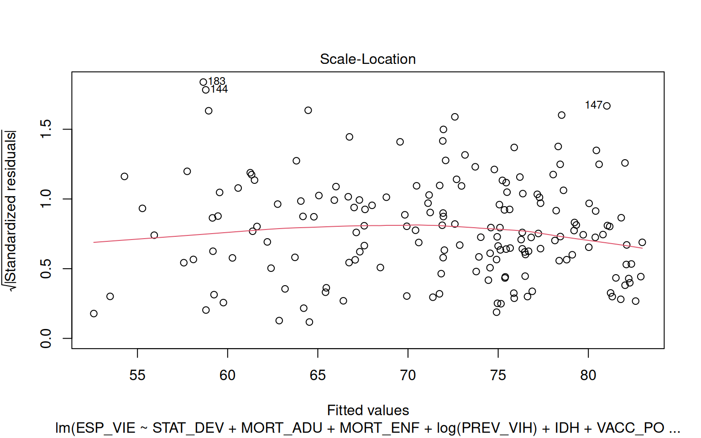
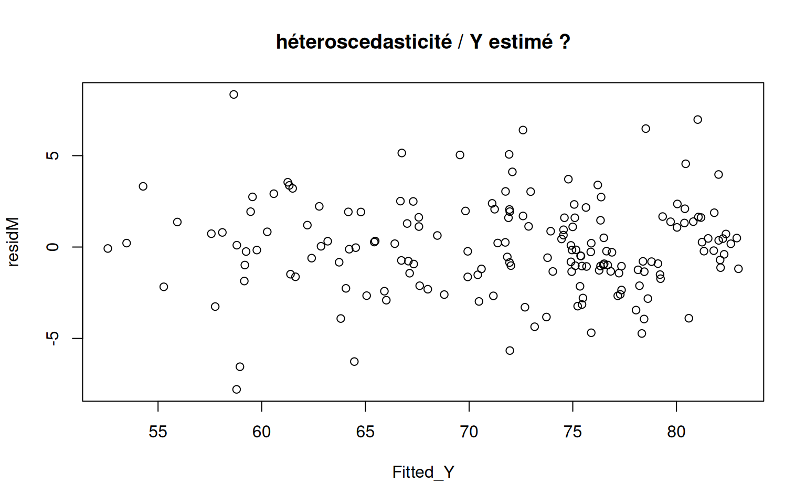
##
## Call:
## lm(formula = residM2 ~ STAT_DEV + MORT_ADU + MORT_ENF + log(PREV_VIH) +
## IDH + VACC_POLIO, data = donnees)
##
## Residuals:
## Min 1Q Median 3Q Max
## -13.016 -5.219 -3.220 0.580 58.856
##
## Coefficients:
## Estimate Std. Error t value Pr(>|t|)
## (Intercept) 7.664250 8.234373 0.931 0.353
## STAT_DEVDeveloping -1.334205 2.712738 -0.492 0.623
## MORT_ADU 0.008476 0.012617 0.672 0.503
## MORT_ENF -0.003630 0.010102 -0.359 0.720
## log(PREV_VIH) 1.030380 1.020340 1.010 0.314
## IDH 0.812811 9.401414 0.086 0.931
## VACC_POLIO -0.006135 0.038667 -0.159 0.874
##
## Residual standard error: 10.9 on 166 degrees of freedom
## Multiple R-squared: 0.02754, Adjusted R-squared: -0.007612
## F-statistic: 0.7835 on 6 and 166 DF, p-value: 0.584## [1] 3.442215##
## studentized Breusch-Pagan test
##
## data: reg2
## BP = 4.764, df = 6, p-value = 0.5744##
## Call:
## lm(formula = residM2 ~ MORT_ADU * MORT_ENF + MORT_ADU * log(PREV_VIH) +
## MORT_ADU * IDH + MORT_ADU * VACC_POLIO + MORT_ENF * log(PREV_VIH) +
## MORT_ENF * IDH + MORT_ENF * VACC_POLIO + log(PREV_VIH) *
## IDH + log(PREV_VIH) * VACC_POLIO + IDH * VACC_POLIO + I(MORT_ADU^2) +
## I(MORT_ENF^2) + I(log(PREV_VIH)^2) + I(IDH^2) + I(VACC_POLIO^2),
## data = donnees)
##
## Residuals:
## Min 1Q Median 3Q Max
## -17.992 -4.568 -2.486 1.911 62.494
##
## Coefficients:
## Estimate Std. Error t value Pr(>|t|)
## (Intercept) 1.943e+01 4.695e+01 0.414 0.679561
## MORT_ADU -2.699e-01 1.081e-01 -2.496 0.013622 *
## MORT_ENF -4.562e-01 3.965e-01 -1.151 0.251650
## log(PREV_VIH) 1.769e+01 8.674e+00 2.039 0.043140 *
## IDH 6.165e+01 1.037e+02 0.595 0.552977
## VACC_POLIO -3.517e-01 4.768e-01 -0.738 0.461877
## I(MORT_ADU^2) 4.420e-04 1.258e-04 3.513 0.000584 ***
## I(MORT_ENF^2) -7.302e-05 5.480e-05 -1.332 0.184715
## I(log(PREV_VIH)^2) -8.130e-01 1.132e+00 -0.718 0.473799
## I(IDH^2) -4.533e+01 7.446e+01 -0.609 0.543579
## I(VACC_POLIO^2) 3.915e-03 1.696e-03 2.308 0.022344 *
## MORT_ADU:MORT_ENF 1.574e-03 8.929e-04 1.763 0.079977 .
## MORT_ADU:log(PREV_VIH) -3.051e-02 1.651e-02 -1.848 0.066590 .
## MORT_ADU:IDH 9.164e-02 1.285e-01 0.713 0.476738
## MORT_ADU:VACC_POLIO 5.543e-04 6.464e-04 0.857 0.392524
## MORT_ENF:log(PREV_VIH) -7.143e-02 4.230e-02 -1.689 0.093343 .
## MORT_ENF:IDH 5.133e-03 3.493e-01 0.015 0.988294
## MORT_ENF:VACC_POLIO 1.339e-03 1.295e-03 1.034 0.302595
## log(PREV_VIH):IDH -1.727e+01 1.304e+01 -1.325 0.187300
## log(PREV_VIH):VACC_POLIO -2.189e-02 3.200e-02 -0.684 0.495030
## IDH:VACC_POLIO -3.393e-01 5.288e-01 -0.642 0.522014
## ---
## Signif. codes: 0 '***' 0.001 '**' 0.01 '*' 0.05 '.' 0.1 ' ' 1
##
## Residual standard error: 10.43 on 152 degrees of freedom
## Multiple R-squared: 0.1846, Adjusted R-squared: 0.07735
## F-statistic: 1.721 on 20 and 152 DF, p-value: 0.03538## [1] 23.07982Avec le test de Breush-Pagan, on a une p-value égale à 0.5744, qui est bien au-dessus du seuil 5%. Donc on ne rejette à priori pas l’hypothèse nulle. 7 Le modèle paraît stable.
Avec le test de White, beaucoup plus complet, on obtient une p-value égale à 0.035 qui inférieure au seuil 5%. On rejette donc l’hypothèse nulle.On va donc appliquer la correction de White.
## (Intercept) STAT_DEVDeveloping MORT_ADU MORT_ENF
## (Intercept) 3.7192759074 -7.325939e-01 -2.978543e-03 -4.949007e-04
## STAT_DEVDeveloping -0.7325938652 4.036573e-01 -8.409300e-05 1.993336e-06
## MORT_ADU -0.0029785433 -8.409300e-05 8.731519e-06 -3.574270e-07
## MORT_ENF -0.0004949007 1.993336e-06 -3.574270e-07 5.597949e-06
## log(PREV_VIH) -0.0665008271 2.442818e-02 -2.823103e-04 2.332905e-05
## IDH -3.5080245457 6.643568e-01 1.790893e-03 5.656255e-04
## VACC_POLIO -0.0034175626 -1.605293e-04 8.241229e-07 7.881299e-07
## log(PREV_VIH) IDH VACC_POLIO
## (Intercept) -6.650083e-02 -3.5080245457 -3.417563e-03
## STAT_DEVDeveloping 2.442818e-02 0.6643568198 -1.605293e-04
## MORT_ADU -2.823103e-04 0.0017908931 8.241229e-07
## MORT_ENF 2.332905e-05 0.0005656255 7.881299e-07
## log(PREV_VIH) 5.710672e-02 0.2173326411 2.945624e-04
## IDH 2.173326e-01 4.8482351668 -4.265282e-03
## VACC_POLIO 2.945624e-04 -0.0042652817 8.201241e-05##
## Comparaison de l'estimation MCO et MCO correction WHITE
## ========================================================================
## Variable dépendante : Espérance de vie par habitant
## ----------------------------------------------------
## MCO MCOWhite
## ------------------------------------------------------------------------
## STAT_DEVDeveloping -1.162* -1.162*
## (0.635) (0.620)
##
## MORT_ADU -0.016*** -0.016***
## (0.003) (0.004)
##
## MORT_ENF -0.002 -0.002
## (0.002) (0.002)
##
## log(PREV_VIH) -1.426*** -1.426***
## (0.239) (0.294)
##
## IDH 28.772*** 28.772***
## (2.202) (2.029)
##
## VACC_POLIO 0.025*** 0.025**
## (0.009) (0.011)
##
## Constant 51.023*** 51.023***
## (1.929) (1.834)
##
## ------------------------------------------------------------------------
## Observations 173
## R2 0.900
## Adjusted R2 0.897
## Residual Std. Error 2.552 (df = 166)
## F Statistic 249.324*** (df = 6; 166)
## ========================================================================
## Note: *p<0.1; **p<0.05; ***p<0.01Hormis la variable de vaccination polio qui est moins significative après la correction, pour le reste des variables, les erreurs n’ont que peu évolué. La correction de White, confirme la robustesse de nos conclusions.
4.2 Analyses complémentaires
Transformation de variables / effets non linéaires
## ## =========================================================== ## Dependent variable: ## ---------------------------- ## ESP_VIE ## (1) (2) ## ----------------------------------------------------------- ## STAT_DEVDeveloping -1.162* -0.841 ## (0.635) (0.766) ## ## MORT_ADU -0.016*** -0.016*** ## (0.003) (0.003) ## ## MORT_ENF -0.002 ## (0.002) ## ## log(PREV_VIH) -1.426*** -1.447*** ## (0.239) (0.243) ## ## IDH 28.772*** 19.023 ## (2.202) (13.498) ## ## I(IDH2) 7.768 ## (10.365) ## ## VACC_POLIO 0.025*** 0.025*** ## (0.009) (0.009) ## ## Constant 51.023*** 53.521*** ## (1.929) (4.084) ## ## ----------------------------------------------------------- ## Observations 173 173 ## R2 0.900 0.900 ## Adjusted R2 0.897 0.896 ## Residual Std. Error (df = 166) 2.552 2.555 ## F Statistic (df = 6; 166) 249.324*** 248.685*** ## =========================================================== ## Note: *p<0.1; **p<0.05; ***p<0.01 ## ## ==== ## TRUE ## ----Interprétation du test d’un modèle quadratique : Pour tester la présence d’effets non linéaires, nous avons comparé notre modèle initial à un modèle quadratique incluant le carré de l’IDH ( I(IDH^2) ). Les résultats montrent que le terme quadratique n’est pas statistiquement significatif et que son ajout entraîne une baisse du R² ajusté, qui passe de 0,897 à 0,896.
Effets croisés de variables
## ## ================================================================================== ## Dependent variable: ## ------------------------------------------------- ## ESP_VIE ## (1) (2) ## ---------------------------------------------------------------------------------- ## STAT_DEVDeveloping -1.162* 18.055* ## (0.635) (9.796) ## ## log(PREV_VIH) -1.426*** -1.493*** ## (0.239) (0.239) ## ## MORT_ADU -0.016*** -0.015*** ## (0.003) (0.003) ## ## MORT_ENF -0.002 -0.002 ## (0.002) (0.002) ## ## VACC_POLIO 0.025*** 0.025*** ## (0.009) (0.009) ## ## STAT_DEVDeveloping:IDH -21.933* ## (11.158) ## ## IDH 28.772*** 50.006*** ## (2.202) (11.020) ## ## STAT_DEVDeveloping:log(PREV_VIH) ## ## ## Constant 51.023*** 32.039*** ## (1.929) (9.845) ## ## ---------------------------------------------------------------------------------- ## Observations 173 173 ## R2 0.900 0.902 ## Adjusted R2 0.897 0.898 ## Residual Std. Error 2.552 (df = 166) 2.530 (df = 165) ## F Statistic 249.324*** (df = 6; 166) 217.945*** (df = 7; 165) ## ================================================================================== ## Note: *p<0.1; **p<0.05; ***p<0.01 ## ## ==== ## TRUE ## ----
Interprétation : STAT_DEV*IDH : L’introduction de cet effet croisé montre un coefficient négatif significatif (-21,933***). Cela signifie que l’impact positif de l’IDH sur l’espérance de vie est moins marqué dans les pays en développement que dans les pays développés. Concrètement, pour une même hausse de l’indice de développement humain, le gain d’années de vie est statistiquement plus faible pour un pays “Developing”, suggérant l’existence de barrières structurelles qui limitent l’efficacité des progrès sociaux dans ces zones.
Interprétation : STAT_DEV*log(PREV_VIH) : Bien que le VIH reste l’un des facteurs les plus dévastateurs pour la longévité (-1,493***), son interaction avec le statut de développement permet de nuancer ce constat. Elle sert à vérifier si l’accès supérieur aux soins dans les pays développés permet d’atténuer l’effet meurtrier du virus par rapport aux pays en développement.
5. Conclusion générale et perspectives
Notre étude visait à déterminer dans quelle mesure les facteurs socio-économiques et sanitaires expliquent les disparités mondiales d’espérance de vie. Pour ce faire, nous avons commencé par nettoyer nos données afin d’effectuer dans un premier temps une analyse descriptive univariée, en analysant les statistiques descriptives, les histogrammes et les boîtes à moustache, puis dans un deuxième temps une analyse bivariée, en analysant la corrélation des variables vis-à-vis de l’espérance de vie, les nuages de points et la corrélation entre les variables afin d’identifier notamment la potentielle multicolinéarité entre certaines d’entre-elles. Nous nous sommes appuyés sur l’estimation des MCO, en privilégiant le modèle niveau-log.
Nos résultats ont par ailleurs validé nos hypothèses de départ. En effet, l’IDH est le facteur le plus déterminant. L’impact des risques sanitaires, à savoir la mortalité adulte et la prévalence VIH réduisent significativement l’espérance de vie. Enfin on a observé que le statut de développement induit une pénalité d’espérance de vie, et l’analyse des effets croisés a elle révélé les pays en développement tirent moins de bénéfices de la hausse de leur IDH, vis-à-vis des pays développés.
Notre étude démontre donc qu’avoir combiner les approches, économiques, sociales et sanitaires était la bonne approche. L’apport principal est la validation de la robustesse de notre modèle. En effet, malgré la détection d’une certaine hétéroscédasticité par le test de White, la correction effectuée ensuite a montré que nos conclusions restaient stables.
Pour prolonger notre étude, on peut développer plusieurs pistes :
On pourrait notre étude sur plusieurs années, afin de voir si par exemple si la prévalence VIH diminue avec l’accès pour certains pays à des traitements.
On pourrait également intégrer des variables environnementales, telles que la pollution ou l’accès à l’eau potable.
On pourrait segmenter l’analyse par continent, afin de voir si les poids des effets marginaux subiraient une variation.
Bibliographie - Source des données
Andre, F. E., et al. (2008). Vaccination greatly reduces disease, disability, death and inequity worldwide. Bulletin of the World Health Organization, 86, 140-146.
Kabir, M. (2008). Determinants of life expectancy in developing countries. World Health & Population, 10(1), 60-71.
Preston, S. H. (1975). The changing relation between mortality and level of economic development. Population Studies, 29(2), 231-248.
Zheng, J. (2014). The impact of HIV/AIDS on life expectancy: An empirical study. Journal of Applied Statistics.